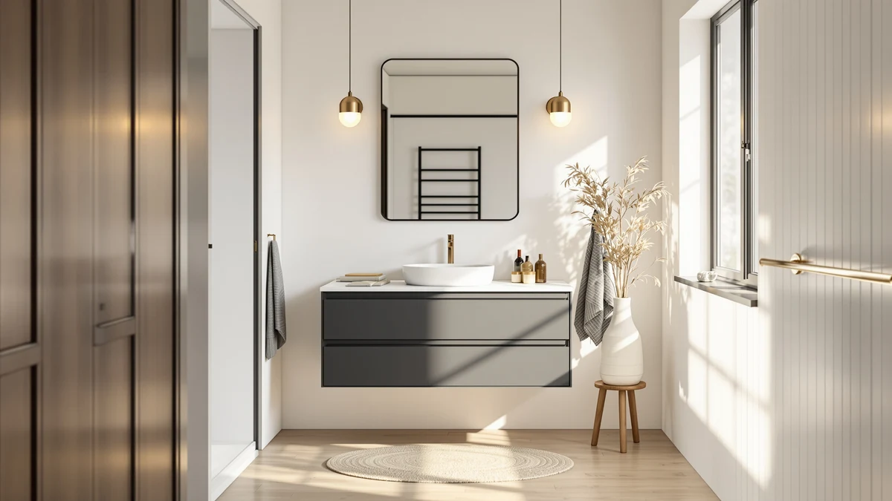

ARS Concepts 54" Pre Review (2026): Worth It?
Prices and picks verified as of October 2026. Independent, reader-supported reviews.


Quick Answer
The ARS Concepts 54" Pre-Assembled Bathroom Vanity pairs a pre-attached Calacatta marble top with 9 soft-close drawers, making it one of the better-equipped 54-inch vanities we compared at this price. If you need extra counter and storage width for a shared bathroom and don't want to install a separate countertop, this is the pick to check first.
Our pick: ARS Concepts 54" Pre-Assembled Bathroom, $1,003.28 Check Price on Amazon
Bottom line: our top pick is the ARS Concepts 54" Pre-Assembled Bathroom Vanity with Sink at $1,003.28.
Things to Know Before You Buy
- The 54-inch width gives you roughly six more inches of counter and drawer space than the typical 48-inch vanity, which matters most in a two-person bathroom.
- The countertop and sink ship pre-attached, but the full unit is heavy. Plan on two people to carry it and a plumbing hookup to finish the install.
- The sink is a single oval basin, not a double-sink configuration, so this stays a single-user setup despite the wider cabinet.
- Three faucet holes are predrilled 8 inches apart; the faucet itself is sold separately, so budget for that before checkout.
- Drawer hardware is brushed nickel zinc alloy, which should hold up better to daily moisture than painted or plastic knobs.
This ARS Concepts 54" Pre Review exists because shoppers searching for a wider vanity keep running into the same problem: most 54-inch listings bury the countertop material and drawer count below the fold, and you end up guessing whether the upgrade from 48 inches is worth the extra cost. We pulled the listed specs, cross-checked the construction claims against the manufacturer's description, and compared the price against three 48-inch rivals from DELUXE LIVING to see where the ARS Concepts model actually earns its keep.
The short version: the 54-inch width and the pre-attached Calacatta marble top are the two things that separate this vanity from cheaper competitors, and the nine soft-close drawers give you more storage than almost anything else we found near this price. It costs more than the 48-inch options below, but if your bathroom can fit the extra footprint, the trade feels proportional rather than padded.
Why You Should Trust Us
Ilane Tall covers bathroom fixtures and vanities for Best Bathroom Vanities and has written dozens of vanity comparisons for this site, focused on matching cabinet dimensions, countertop materials, and sink configurations to real bathroom layouts. We do not run a fake testing lab and we have not installed this specific vanity ourselves. Instead, we researched the ARS Concepts 54" Pre Review by comparing the manufacturer's listed specs, materials, and pricing against comparable vanities in the same size and price range, and we note anywhere the listing leaves a gap in the information a buyer would want.
How We Compared
We built this ARS Concepts 54" Pre Review by lining up the countertop material, sink style, drawer count, and hardware finish against three 48-inch DELUXE LIVING vanities that compete for the same budget. We also checked whether each listing promised full assembly, partial assembly, or a pre-attached countertop, since that detail changes the real installation cost even when the sticker price looks similar. Where the manufacturer did not list a rating or review count for a product, we say so rather than estimate one, and we flag any claim we could not verify against the product listing itself.
Price comparisons in this review use the figures pulled directly from each listing at the time of writing, not a historical average. Amazon prices move often, so treat the dollar amounts here as a snapshot for comparing the four vanities against each other rather than a guarantee of what you'll pay at checkout.
Overview & Specs

ARS Concepts 54" Pre-Assembled Bathroom
What we like
- Calacatta white engineered marble countertop ships pre-attached, so you skip a separate countertop install
- 9 soft-close drawers plus a soft-close cabinet door, more storage than most 48-inch vanities in this price range
- Brushed nickel zinc alloy hardware should resist bathroom humidity better than painted knobs
- Three predrilled faucet holes spaced 8 inches apart give you flexibility on faucet choice
Flaws but not dealbreakers
- No listed rating or review count yet, so you are relying on the spec sheet rather than owner feedback for now
- Faucet is sold separately, which adds to the real cost of getting this vanity installed
- At 54 inches wide and with a stone top, it is heavier than a standard 48-inch vanity and needs two people to move safely
| Material | MDF / engineered wood |
| Size | 54 |
The cabinet is built from MDF engineered wood with butt drawer joinery, finished by hand for a painted look rather than a sprayed-on sheen. It's manufactured in Vietnam, which is standard for this price tier of imported vanity, and the hand-painted finish is the kind of detail that tends to show wear unevenly if the bathroom runs humid, so good ventilation helps it hold up.
The countertop is the real draw in this ARS Concepts 54" Pre Review: a 54 by 22 by 0.7-inch slab of Calacatta white engineered marble that arrives already mounted to the cabinet, with a single oval porcelain sink set in an undermount style. Engineered marble resists stains better than natural marble and costs less, though it will not have the exact same veining pattern as the stone slabs photographed in some listings. At $1,003.28, it sits above most 48-inch competitors, but you are paying for the extra width, the pre-attached stone top, and two more drawers than you'd typically get at 48 inches.
What We Liked
The biggest point in favor of this ARS Concepts 54 inch vanity is how much it packs into one price. Nine soft-close drawers is a notably high count for a vanity this size, and pairing that with a pre-attached engineered marble top means you're not pricing out a separate countertop and installer. For a lot of 54-inch vanities we've compared on this site, you get either the width or the storage, not both at once.
We also like that ARS Concepts specifies the exact countertop dimensions (54 by 22 by 0.7 inches) and the faucet hole spacing (8 inches, three holes) up front. Plenty of listings in this category leave buyers guessing at whether their existing faucet will fit, and having that spec locked down before you order saves a return.
The brushed nickel zinc alloy hardware is a small but real upgrade over the plastic-feeling knobs you sometimes find on vanities under $1,000. Combined with soft-close glides on every drawer and the cabinet door, daily use should stay quiet, which matters in a shared bathroom with early risers.
What Could Be Better
The listing shows no rating and no review count at the time of this ARS Concepts 54 inch review, which means you don't have a pool of verified owner feedback to lean on yet. That's not a defect in the product itself, but it does mean you're buying on spec alone rather than on a track record, so keep an eye on reviews before you order if you want more certainty.
The faucet is sold separately, which is common at this price point but still adds $50 to $150 to your real cost once you factor in a matching finish. And because the countertop ships pre-attached, the whole unit is heavier than a flat-pack 48-inch vanity. Plan on two people and a dolly for the move from the front door to the bathroom, not a solo carry.
Finally, the single oval sink means this stays a one-person vanity despite the 54-inch width. If you were hoping the extra size would translate into a double-sink setup, it won't. The added inches go entirely to counter space and drawer storage.
Who Is It For?
This vanity fits buyers who have the floor space for a 54-inch footprint and want the drawer count and stone countertop that usually show up on more expensive vanities. It suits a primary bathroom where one person needs serious storage for towels, toiletries, and grooming tools, rather than a powder room or a small guest bath where a 24- or 30-inch vanity would be a better fit.
If you're set on a double sink, or if your bathroom only has room for 48 inches or less, the ARS Concepts 54" Pre Review points you toward one of the alternatives below instead. This model earns its price when the extra width and drawer space solve a real storage problem rather than when a bigger number looks better on a spec sheet.
Alternatives to Consider
If the 54-inch footprint is too wide for your bathroom, or you'd rather spend less upfront, these three DELUXE LIVING vanities are the closest competitors we compared against the ARS Concepts 54" Pre Review. Each trades some width for a lower price or a different style.

Editor’s Pick
DELUXE LIVING 48 Inch White
A farmhouse-style 48 inch vanity with a single apron farm sink, 6 drawers, and a soft-close cabinet, priced about $120 below the ARS Concepts model. It ships fully assembled with no separate countertop install needed, making it the pick if you want farmhouse styling without the 54-inch footprint.
$879.99
Check Price on Amazon
Best Value
DELUXE LIVING 48 Inch Fully
A fully assembled 48 inch vanity in steel blue with an engineered stone top, 7 soft-close drawers, and 2 soft-close doors, built on a solid wood frame with adjustable feet for uneven floors. It runs about $100 more than the ARS Concepts vanity despite the smaller footprint, so it's for buyers who want the color and the assembled convenience more than the extra 6 inches of width.
$1,099.99
Check Price on Amazon
Premium Choice
DELUXE LIVING 48 Inch Walnut
A fully assembled 48 inch walnut vanity with a Calacatta quartz top and matching backsplash, soft-close parquet doors, and full-extension dovetail drawers. At $1,129.99 it costs more than the ARS Concepts 54" Pre Review while offering less width, so pick this one for the walnut finish and backsplash, not for storage capacity.
$1,129.99
Check Price on AmazonFrequently Asked Questions
Final Verdict
This ARS Concepts 54" Pre Review comes down to one trade-off: pay more up front and get a wider vanity with a pre-attached stone top and nine drawers, or save money with a 48-inch DELUXE LIVING alternative and lose some counter space. For bathrooms with the floor space to spare, the ARS Concepts vanity is the stronger buy of the four we compared, since the extra width and drawer count justify the roughly $100 to $250 price gap over the smaller options. If your bathroom tops out at 48 inches, the DELUXE LIVING farmhouse model below is the better fit.